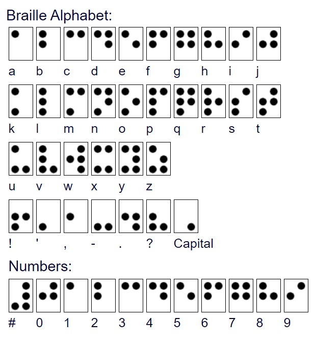

What is Braille?
Braille is a system of raised dots that can be read with the fingers by people who are blind or who have low vision. Teachers, parents, and others who are not visually impaired ordinarily read braille with their eyes. Braille is not a language. Rather, it is a code by which many languages—such as English, Spanish, Arabic, Chinese, and dozens of others—may be written and read. Braille is used by thousands of people all over the world in their native languages, and provides a means of literacy for all.
The specific code used in the United States has been English Braille, American Edition but as of 2016 the main code for reading material is Unified English Braille, a code used in seven other English-speaking countries.
The machine to write Braille
Braille alphabet and numbers
Braille symbols are formed within units of space known as braille cells. A full braille cell consists of six raised dots arranged in two parallel rows each having three dots. The dot positions are identified by numbers from one through six. Sixty-four combinations are possible using one or more of these six dots. A single cell can be used to represent an alphabet letter, number, punctuation mark, or even a whole word. This braille alphabet and numbers page illustrates what a cell looks like and how each dot is numbered.

The "#" is a number indicator
How was Braille Invented?
Louis Braille was born in Coupvray, France, on January 4, 1809. He attended the National Institute for Blind Youth in Paris, France, as a student. At that time, books were created using raised print which was laborious to produce, hard to read, and difficult for individuals to write. While attending the Institute, Braille yearned for more books to read. He experimented with ways to create an alphabet that was easy to read with the fingertips. The writing system he invented, at age fifteen, evolved from the tactile "Ecriture Nocturne" (night writing) code invented by Charles Barbier for sending military messages that could be read on the battlefield at night, without light.